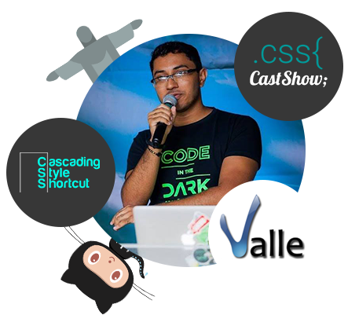
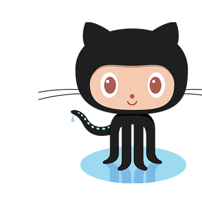

Empathy and HTML
Building Components for People
Afonso Pacifer
Web Platform Evangelist
Uma pergunta...
Se todos 'sabem' fazer funcionar, por que poucos trabalham no Google?
Aplicações?
Aplicação
Software aplicativo, ou simplesmente aplicativo ou aplicação, é um programa de computador que tem por objetivo ajudar o seu usuário a desempenhar uma tarefa específica, em geral ligada a processamento de dados.
Como?
Nosso processo de cada dia
Regras de negócio
Nosso objetivo
Requisitos
Nossas tarefas
Implementação
Nosso trampo
Funcionar é o bastante?
Aqui temos a diferença!
Funcionar para quem?
Voltando a definição de aplicação
Usuário
Como atingir esse cara?
Interface de usuario?
User interface / UI
The User Interface (UI) is everything designed into an information device with which a human being may interact
Muito além do visual
Seus códigos, DOM API, etc...
Desafio prático
Como recriar um botão?
Interface visual
Deve parecer um botão
Navegação
Deve ser navegavél como um botão
Estados
Nem sempre navegavél
Keyboard Black Magic
Deve ser 'clicável' via teclado
Mais estados
Nem sempre 'clicável'
Diferença do real?
Ou.. para que serve a semântica
Interface para robôs
Humanos não sabem ler código
Leitores de tela
NVDA e Voice Over
WAI-ARIA
Adicionando papéis
E se fosse toggle?
Adicionando mais papéis
Como manipulamos?
Javascript API
É só usar o elemento botão
Para que aprender tudo isso?
Resposta grossa
O elemento existir e vc saber como ele funciona sao coisas diferentes
Respota light
Será que todos os seus compoentes são nativos do HTML?
Exemplo da vida real
Elemento mult select
Vá além da interface
Funcionar X Qualidade
Boas práticas
Crie checklists
Suas próprias tags HTML
Web Components existem, sabia?
O que dá para fazer?
Ecosistema polymer
Generators
Reutilizando estruturas
Mixins
Reutilizando interfaces
Pergunta chave!
Como saber o que criar na interface de um componente que ainda não existe?
Soft Skills
Competências comportamentais e sociais
Empatia
A Soft Skills mais importante para UI
Empatia
Ação de se colocar no lugar de outra pessoa, buscando agir ou pensar da forma como ela pensaria ou agiria nas mesmas circunstâncias.
Últimas dicas
Não tenho tempo!
Então não peça permissão!
A empresa não deixa!
Sua empresa é medíocre, demita-se
Responsabilidade
Barreiras de a11y
Último argumento
LBI – Lei 13.146/15
Follow me
@afonsopacifer
